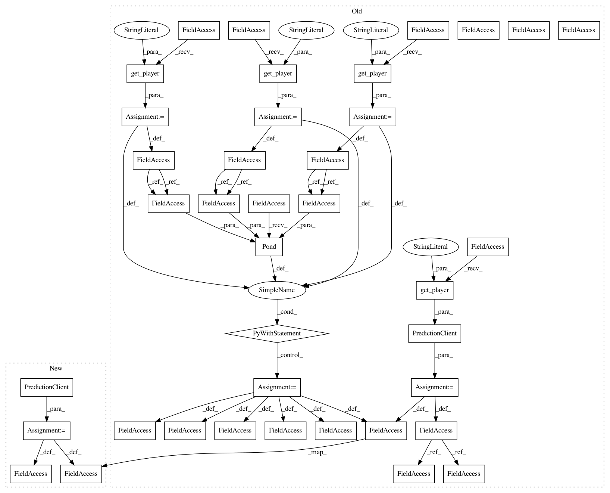

271dddf15a9f07bb9647ecf5594e079e12f2e8d2,examples/securenn/network_c.py,,,#,183
Before Change
model_trainer = ModelTrainer(config.get_player("model-trainer"))
prediction_client = PredictionClient(config.get_player("prediction-client"))
server0 = config.get_player("server0")
server1 = config.get_player("server1")
crypto_producer = config.get_player("crypto-producer")
with tfe.protocol.Pond(server0, server1, crypto_producer) as prot:
// get model parameters as private tensors from model owner
params = prot.define_private_input(model_trainer.player, model_trainer.provide_input, masked=True) // pylint: disable=E0632
// we"ll use the same parameters for each prediction so we cache them to avoid re-training each time
params = prot.cache(params)
// get prediction input from client
x, = prot.define_private_input(prediction_client.player, prediction_client.provide_input, masked=True) // pylint: disable=E0632
// helpers
conv = lambda x, w: prot.conv2d(x, w, ModelTrainer.STRIDE, "VALID")
pool = lambda x: prot.avgpool2d(x, (2, 2), (2, 2), "VALID")
// compute prediction
Wconv1, bconv1, Wconv2, bconv2, Wfc1, bfc1, Wfc2, bfc2, Wfc3, bfc3 = params
bconv1 = prot.reshape(bconv1, [-1, 1, 1])
bconv2 = prot.reshape(bconv2, [-1, 1, 1])
layer1 = pool(prot.relu(conv(x, Wconv1) + bconv1))
layer2 = pool(prot.relu(conv(layer1, Wconv2) + bconv2))
layer2 = prot.reshape(layer2, [-1, ModelTrainer.HIDDEN_FC1])
layer3 = prot.matmul(layer2, Wfc1) + bfc1
layer4 = prot.matmul(layer3, Wfc2) + bfc2
logits = prot.matmul(layer4, Wfc3) + bfc3
// send prediction output back to client
prediction_op = prot.define_output(prediction_client.player, [logits], prediction_client.receive_output)
with tfe.Session() as sess:
print("Init")
sess.run(tf.global_variables_initializer(), tag="init")
After Change
model_trainer = ModelTrainer()
prediction_client = PredictionClient()
// get model parameters as private tensors from model owner
params = tfe.define_private_input("model-trainer", model_trainer.provide_input, masked=True) // pylint: disable=E0632
// we"ll use the same parameters for each prediction so we cache them to avoid re-training each time
params = tfe.cache(params)
// get prediction input from client
x, y = tfe.define_private_input("prediction-client", prediction_client.provide_input, masked=True) // pylint: disable=E0632
// helpers
conv = lambda x, w: tfe.conv2d(x, w, ModelTrainer.STRIDE, "VALID")
pool = lambda x: tfe.avgpool2d(x, (2, 2), (2, 2), "VALID")
// compute prediction
Wconv1, bconv1, Wconv2, bconv2, Wfc1, bfc1, Wfc2, bfc2, Wfc3, bfc3 = params
bconv1 = tfe.reshape(bconv1, [-1, 1, 1])
bconv2 = tfe.reshape(bconv2, [-1, 1, 1])
layer1 = pool(tfe.relu(conv(x, Wconv1) + bconv1))
layer2 = pool(tfe.relu(conv(layer1, Wconv2) + bconv2))
layer2 = tfe.reshape(layer2, [-1, ModelTrainer.HIDDEN_FC1])
layer3 = tfe.matmul(layer2, Wfc1) + bfc1
layer4 = tfe.matmul(layer3, Wfc2) + bfc2
logits = tfe.matmul(layer4, Wfc3) + bfc3
// send prediction output back to client
prediction_op = tfe.define_output("prediction-client", [logits, y], prediction_client.receive_output)
with tfe.Session() as sess:
In pattern: SUPERPATTERN
Frequency: 3
Non-data size: 39
Instances
Project Name: mortendahl/tf-encrypted
Commit Name: 271dddf15a9f07bb9647ecf5594e079e12f2e8d2
Time: 2018-10-17
Author: 1278248+morgangiraud@users.noreply.github.com
File Name: examples/securenn/network_c.py
Class Name:
Method Name:
Project Name: mortendahl/tf-encrypted
Commit Name: 271dddf15a9f07bb9647ecf5594e079e12f2e8d2
Time: 2018-10-17
Author: 1278248+morgangiraud@users.noreply.github.com
File Name: examples/securenn/network_c.py
Class Name:
Method Name:
Project Name: mortendahl/tf-encrypted
Commit Name: 271dddf15a9f07bb9647ecf5594e079e12f2e8d2
Time: 2018-10-17
Author: 1278248+morgangiraud@users.noreply.github.com
File Name: examples/securenn/network_b.py
Class Name:
Method Name:
Project Name: mortendahl/tf-encrypted
Commit Name: 271dddf15a9f07bb9647ecf5594e079e12f2e8d2
Time: 2018-10-17
Author: 1278248+morgangiraud@users.noreply.github.com
File Name: examples/securenn/network_d.py
Class Name:
Method Name: